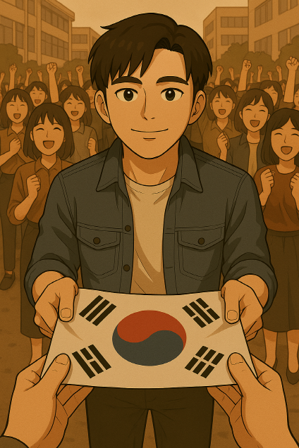

민주주의가 승리한 기쁨의 현장에서 민주아저씨는 나에게 태극기를 주었다.
"고마워, 너 덕분에 나도 살았고, 대한민국도 살았어."
"아니에요. 민주주의가 무엇인지, 얼마나 소중한 건지도 모르고 살았었는데 아저씨 덕분에 느낄 수 있었어요."
"이 태극기는 너에게 줄게. 잘 간직해줬으면 좋겠어. 그리고 우리집에도 자주 놀러와. 아저씨가 또 라면 끓여줄게."
태극기를 받는다.